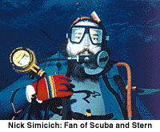

Explain your group and its purpose.
Howard Stern is a phenomenon without equal. He is an entertainer who
is also a political lightning rod. He draws heat and criticism for things that other entertainers do casually. He stretches the
limits of acceptability
and others follow in his footsteps. This group is for fans of Howard
and his body of work to get together and discuss his activities.
How did you get involved with it?
I argued for it and created it.
Do you have a day job? If so, what is it?
I am an Internet Security Consultant for the IBM Global Consulting Group.
What's a typical conversation thread like?
It might be about a show personality, one of Howard's appearances on TV, or speculation on his upcoming
movie. It might also be political commentary by
people who just don't get it.
What's the oddest thing that had to be addressed
in the alt.fan.howard-stern FAQ?
The size of Howard Stern's (physical endowment). Now that the FAQ is htmlized, I find (by looking in the
referrer log) that many folks do an infoseek search
on ësize' and pull up the Howard Stern FAQ.
What's the strangest thing that you've seen online?
Too many people mistake the 'net for real life. But the oddest thing is that over the course of the 10 years I've been
involved with the 'net, it has become real life.
Are flames common in your group?
If so, what usually brings them on?
Flames are common. People have strong opinions about Howard
Stern and express them, and others strongly disagree. Also,
we seem to have a large number of idiots. Some of the
idiots are flamed, and some of them do the flaming.
Does the conversation typically stay on that topic
or how has it wandered in the past?
It has wandered quite a bit. Perhaps the most consistent
wandering was when Howard ran for Governor of New York
on the Libertarian ticket. For a long time it seemed that
every Libertarian thread was cross-posted to the Howard
Stern fan group. This seemed to keep on happening
long after Howard withdrew from the race. I guess
the Libertarians didn't get the joke.
Describe your computer area.
I have a recliner with a bookshelf on my right side and two monitors on my left. One of the monitors is on a switch.
Mostly I use Linux, but I also have a machine that runs OS/2 and Windows programs. My wife has her computers as well,
and they are all ethernet connected.
|
|
What's your favorite thing to munch on when you surf?
Water with a bit of lime in it, radishes, Japanese soy sauce flavored rice crackers and soprasetta sausage.
How long do you typically spend working overseeing your
group, maintaining the FAQ or mailing list in a week?
In the old days, right after the group was newgrouped, I spent a lot of time answering questions in the group. I don't do that anymore.
The group has long since reached critical mass and has a life of its own. I am spending about an hour a week updating the FAQ these
days, as Howard is in the news and now that the FAQ is in html, and can be fetched at any time.
So if I have a schedule in it, and it changes, I try to change it immediately, but I don't repost the FAQ in the newsgroup. Remember
that the purpose of a FAQ is to give people something to read so that they can get a level set about the purpose of the group. It can't
be too long, or people
won't read it. Its purpose is to reduce traffic in the group.

What do people
do that makes you mad (while on-line)?
Two things: Act like clueless newbies. There are plenty of things that one can read about how to act on usenet or mailing lists. There is
really no excuse for cluelessness. One example in the Howard Stern Group: posting asking for phone numbers. All of the numbers are
either in a FAQ or in the radio list that is pointed to by the FAQ. Failing that, they could pick up their phone and call directory
assistance. Instead they waste thousands of people's time who are looking for discussion and have another thread of postings to skip.
Posting tests to a discussion group is another clueless act.
The second thing is that when you argue, you should consider that you are in a negotiation. The right answer is win-win. If you
argue just for the sake of argument and don't acknowledge when the other person makes a point, you are acting like a lawyer.
What direction do you think the Internet is headed?
To a great extent, the Internet is a logical extension of the telephone. It will tend to break down national barriers and speed
communication. The Web is an amazing thing. The Web is reducing the entry barrier to publication to the point that anyone can
publish widely. In this case, "The Medium is the Message," to quote Marshall McLuhan. The Web is more important than the content of
the Web, at this point.
Are you a dog person or a cat person? Or do you
prefer an alternative pet?
I have three parrots, a blue and gold macaw, a severe macaw, and an African grey parrot. I also have a retired racing greyhound. We
used to have a cat, and a bunch of ferrets, but they got old and passed on.
Finally, why is alt.fan.howard-stern important?
Um, I don't think that alt.fan.howard-stern could be classed
as important.
|